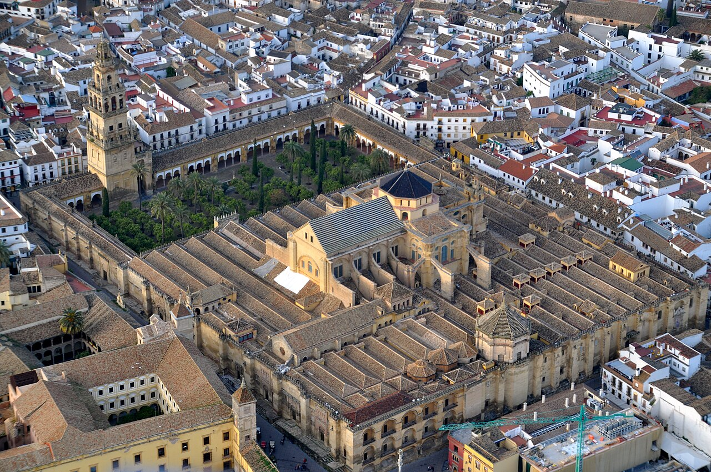

INICIO
La mezquita-catedral de Córdoba, conocida eclesiásticamente como catedral de Nuestra Señora de la Asunción y de forma popular como la Mezquita, es la catedral de la diócesis de Córdoba ubicada en la ciudad española de Córdoba, Andalucía. Según las fuentes islámicas, antes de la conquista musulmana de la península ibérica, en este lugar se encontraba la basílica de San Vicente, mientras que las excavaciones indican la existencia de un complejo episcopal erigido en el siglo V.
FUENTES HISTÓRICAS
Según las fuentes musulmanas, en el solar de la actual mezquita-catedral de Córdoba estuvo originalmente una iglesia cristiana dedicada a San Vicente Mártir, que fue dividida y compartida entre cristianos y musulmanes tras la conquista islámica de la península ibérica. Con el aumento de la población islámica, el emir Abderramán I decidió en 785 comprar la estructura al completo y demolerla[23] para construir la nueva mezquita;[24] a cambio, permitió a los cristianos reconstruir otras iglesias en ruinas, incluidas las de los mártires san Fausto, Januario y Marcial, que gozaban de gran devoción en la época.
